Preparation Speedrun
Pôvodný súbor: PIS_priprava_speedrun(1).md.
Táto stránka je transformovaný zdrojový súbor. Base64 obrázky boli vyextrahované do assets/images, aby ich Quartz normálne renderoval.
PIS doc
by LICH
P1
Architektúry IS
- Dvojvrstvová (Klient-server): Využíva dva druhy oddelených výpočetných systémov; „hrúbka“ klienta závisí od jeho inteligencie (množstva logiky, ktorú spracováva).
- Trojvrstvová architektúra (Three-tier): Štandard pre moderné informačné systémy, ktorý oddeľuje:
- Prezentačná vrstva: Vizualizácia informácií (GUI), kontrola vstupov, neobsahuje spracovanie dát.
- Aplikačná (Business) vrstva: Jadro aplikácie, implementuje logiku, funkcie a výpočty.
- Dátová vrstva: Správa dát (databáza, súborový systém alebo webová služba).
Tier vs. Layer
- Tier (Fyzická vrstva): Jednotka nasadenia (deployment); určuje, na akom hardvéri/serveri časť systému beží (napr. DB server, aplikačný server).
- Layer (Logická vrstva): Jednotka organizácie kódu v rámci aplikácie (napr. Data layer, Business layer, Presentation layer).
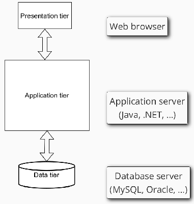
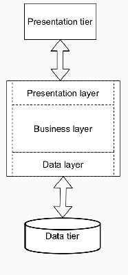
Monolitická architektúra
- Charakteristika: Systém sa vyvíja a nasadzuje ako jeden celok (jeden balík) s jednotnou technológiou a zdieľanou databázou.
- Výhody: Jednoduchší vývoj a testovanie, rýchle úvodné nasadenie.
- Nevýhody: Obtiažna aktualizácia častí, riziko, že aplikácia prerastie únosnú medzu, technologická závislosť (ťažký prepis pri zastaraní technológií).
Mikroslužby (Microservices)
- Charakteristika: Aplikácia je rozdelená na malé, nezávislé časti, ktoré komunikujú cez API (napr. REST).
- Vlastnosti: Každá služba má vlastnú databázu, vlastnú business logiku a spravuje ju malý tím.
- Výhody: Technologická nezávislosť služieb, jednoduché čiastkové aktualizácie, kontinuálny vývoj.
- Nevýhody: Komplexné testovanie (závislosti), réžia sieťovej komunikácie, riziko reťazového zlyhania.
P2 Java Backend
Dependency Injection (DI)
- Princíp: Ide o mechanizmus na voľné prepojenie (loose coupling) komponentov v aplikácii.
- Účel: DI obmedzuje priame závislosti medzi triedami v kóde, čo zvyšuje flexibilitu (umožňuje jednoduchú výmenu implementácie) a uľahčuje testovanie.
Contexts and Dependency Injection (CDI):
- Moderný a obecný mechanizmus pre Dependency Injection (DI).
- Umožňuje voľné prepojenie tried, čo uľahčuje testovanie a údržbu.
- Používa anotáciu
@Injectna získanie inštancií objektov. - Definuje životný cyklus (Scope) objektov:
@Dependent: (default) Objekt vzniká špecificky pre daný prípad (pre konkrétneho vlastníka, do ktorého je injektovaný). Jeho životný cyklus je pevne spätý s jeho vlastníkom – to znamená, že zaniká v rovnakom okamihu ako objekt, do ktorého bol vložený.@RequestScoped: Objekt žije počas jedného HTTP požiadavku.@SessionScoped: Objekt žije počas celej relácie používateľa.@ApplicationScoped: Jedna inštancia pre celú aplikáciu.
P3 Objektový model dát
Dedičnosť (Dědičnost)
- Princíp: Definovanie nového typu (následníka) pomocou rozdielov (diferencií) oproti existujúcemu typu (predkovi).
- Tri druhy diferencií:
- Pridávanie novej vlastnosti.
- Modifikácia (upresnenie) existujúcej vlastnosti.
- Zrušenie (vypustenie) vlastnosti.
- Hierarchia:
- Predok vs. Následník: Typ, z ktorého sa dedí, je predok; odvodený typ je následník.
- Jednoduchá dedičnosť: Následník má iba jedného priameho predka (grafom je strom).
- Vícenásobná dedičnosť: Následník môže mať viacero priamych predkov (obecný acyklický graf).
- Pravidlo cyklu: V grafe dedičnosti sa nesmie vyskytovať cyklus – žiaden typ nemôže byť svojím vlastným predkom.
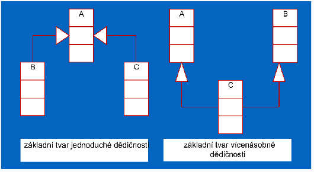
Typová kompatibilita a Extent
- Kompatibilita: Každá štruktúra určitého typu je zároveň typu všetkých svojich predkov. Následník je kompatibilný s predkom (napr. všade, kde sa očakáva “Osoba”, môže vystupovať “Študent”), ale nie naopak.
- Extent: Kolekcia všetkých existujúcich inštancií daného typu v databáze.
- Extent predka obsahuje aj všetky inštancie jeho následníkov.
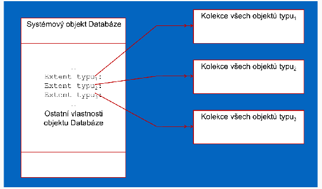
Abstraktné a konkrétne typy
- Abstraktné typy: Slúžia len ako vzory (stavebné kamene) pre následníkov a nemôžu mať vlastné inštancie (napr. “Ekonomický subjekt”).
- Konkrétne typy: Typy, ktoré reálne vytvárajú inštancie/objekty (napr. “Banka”).
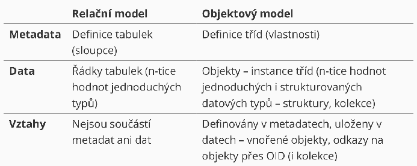
P4
Popis služieb v REST
Keďže architektúra REST môže byť pri voľnom pridávaní endpointov chaotická, je dôležitý ich formálny popis:
Spôsoby autentizácie v REST
REST je podľa definície bezstavový, čo znamená, že každá požiadavka musí obsahovať všetky údaje potrebné na spracovanie (teoreticky to vylučuje sessions na serveri).
- HTTP Basic autentizácia:
- Meno a heslo sa posielajú v hlavičke
Authorization. - Údaje sú len kódované (base64), preto je nevyhnutné použiť HTTPS.
- Ak chýba autentizácia, server vráti kód 401 Unauthorized.
- Meno a heslo sa posielajú v hlavičke
- Tokeny (napr. JWT): Token je validovateľný priamo na serveri bez nutnosti držať session.
JSON Web Token (JWT)
JWT je kompaktný řetězec, ktorý slúži na bezpečný prenos informácií medzi stranami ako objekt JSON.
- Štruktúra (tri časti spojené bodkou):
- Header (hlavička): Obsahuje typ tokenu a použitý algoritmus podpisu.
- Payload (obsah): Dáta vo forme “claims” (napr. ID používateľa, jeho roly/skupiny, čas expirácie). Claims:
- iss (Issuer): vydavateľ tokenu
- upn (User Principal Name): jednoznačné meno používateľa (identifikátor)
- groups: zoznam rolí alebo skupín, do ktorých je používateľ zaradený
- Signature (podpis): Slúži na overenie, že token nebol cestou zmenený (integrita).
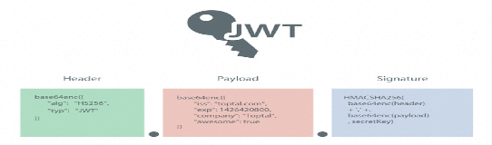
- Proces použitia:
- Klient pošle prihlasovacie údaje na autentizačný server.
- Server vygeneruje a podpíše JWT (privátnym kľúčom), ktorý vráti klientovi.
- Klient ukladá token a posiela ho v každej požiadavke v hlavičke:
Authorization: Bearer <token>.
- JWT v Jave (MicroProfile):
- Nie je priamo v jadre Jakarta EE, ale je súčasťou MicroProfile, čo moderné servery (Payara, Liberty) podporujú.
- Autorizácia v kóde: Zapína sa anotáciou
@LoginConfig(authMethod = "MP-JWT")v konfigurácii JAX-RS. - Prístup k endpointom sa riadi anotáciou @RolesAllowed, ktorá kontroluje roly definované priamo v tokene.
GraphQL
- Problém RESTu: REST endpointy vracajú vždy fixnú štruktúru dát, čo vedie k redundancii (klient dostane viac dát, než potrebuje) alebo k potrebe viacerých dotazov na získanie súvisiacich informácií.
- Riešenie GraphQL: Klient si v dotaze sám špecifikuje presný tvar odpovede, ktorú potrebuje.
- Výhody: Predvídateľný výsledok, eliminácia nadbytočných dát a vyššia efektivita pri získavaní dát, ktoré sú “drahé” na spracovanie.
Dátový model (Schéma)
- Typy dát: Využíva jednoduché typy (Int, Float, String, Boolean, ID, enum) a užívateľské štruktúry.
- Root types (Koreňové typy): Špeciálne typy reprezentujúce samotné volanie API:
- Query: Slúži výhradne na čítanie dát.
- Mutation: Slúži na zmenu dát (zápis, aktualizácia, mazanie).
- SDL (Schema Definition Language): Jazyk na formálnu definíciu typov a operácií.
Operácie a komunikácia
- Dotazy (Queries): Umožňujú vyžiadať si konkrétne polia (vlastnosti) objektov, a to aj zanorených (napr. osoba a jej autá).
- Modifikácie (Mutations): Definujú parametre pre zmenu dát a návratovú hodnotu (napr. ID vytvoreného objektu).
- GraphQL cez HTTP:
- Využíva sa jediné endpoint URL pre všetky operácie.
- Dáta sa posielajú cez POST (ako JSON s kľúčom “query”) alebo cez GET priamo v URL.
P5
Ďalšie architektúry API
WSDL (Web Services Description Language)
- Účel: Slúži na formálny popis rozhraní webových služieb nezávislý od platformy.
- Formát: Ide o XML dokument, ktorý využíva XML menné priestory (Namespaces) a XML schémy.
- Čo definuje:
- Názvy dostupných funkcií.
- Ich vstupné a výstupné parametre.
- Spôsob volania vrátane cieľovej URL adresy.
- Využitie v praxi:
- Umožňuje automatické generovanie rozhraní v cieľovom programovacom jazyku (tzv. „Stub“ – zástupná metóda pre volanie cez HTTP).
- Funguje to aj opačne – z existujúceho kódu možno vygenerovať WSDL popis.
SOAP
- Charakteristika: Komplikovaný štandard pre webové služby, ktorý vznikol ako snaha o maximálnu štandardizáciu volaní cez HTTP.
- Úloha: Predstavuje samotný protokol pre volanie služby a prenos dát.
- Štruktúra správy: Dáta sú zabalené v XML obálke (
<env:Envelope>), ktorá sa delí na hlavičku (<env:Header>) a telo (<env:Body>). - Porovnanie: Na rozdiel od RESTu, ktorý je flexibilný, SOAP striktne vyžaduje WSDL popis a XML formát.
Synchrónna komunikácia
- Charakteristika: Ide o najčastejší spôsob komunikácie, typicky realizovaný cez REST.
- Princíp: Klientska služba odošle požiadavku a následne čaká na odpoveď od volanej služby, čo spôsobuje blokovanie jej ďalšej činnosti.
- Nevýhody: Ak volaná služba nie je dostupná, klientska služba musí čakať (timeout) alebo sama zlyhá.
Asynchrónna komunikácia
- Charakteristika: Služba odošle správu a nečaká na okamžitú odpoveď, čím môže plynule pokračovať vo svojej práci.
- Sprostredkovateľ: Výmenu správ medzi službami zabezpečuje centrálny message broker.
Message Broker a jeho modely
Message broker je samostatný systém, ktorý garantuje doručenie správ medzi producentmi a konzumentmi. Existujú dva hlavné modely doručovania:
- 1. Message Queue (Fronta správ):
- Zprávy od konkrétneho producenta sa radia do fronty pre jedného konkrétneho konzumenta.
- Príklady: RabbitMQ, Apache ActiveMQ, Amazon SQS.
- 2. Publish / Subscribe (Publikácia / Odber):
- Zprávy sú priraďované k určitým témam (topics).
- Producent publikuje správu do témy a správa je doručená všetkým konzumentom, ktorí sú prihlásení na odber danej témy.
- Príklady: Apache Kafka, Pulsar, Amazon SNS.
P6 Procesy
Procesy v IS: Realizujú transformácie dát (často ako transakcie) a menia stav systému; mali by byť izomorfné s realitou.
Transakčné spracovanie (ACID)
- ACID: Atomickosť (všetko alebo nič), Konzistencia (pravidlá DB), Izolovanosť (nerušenie sa), Trvanlivosť (prežitie havárie).
- Zodpovednosť: Programátor zodpovedá za konzistenciu; TPS (systém) automaticky zaisťuje ostatné vlastnosti.
Pokročilé modely a distribuované transakcie
- Zretězené transakcie (Chained): Sekvencia podtransakcií, kde každá sa potvrdzuje samostatne; kratšie zámky, vyšší výkon.
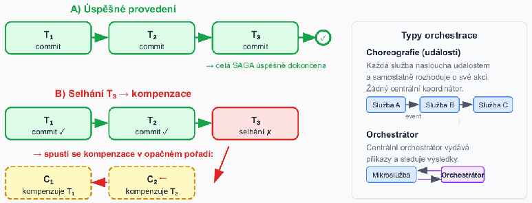
Zotaviteľné fronty a reálne udalosti
- Zotaviteľná fronta: Mechanizmus pre plánovanie budúcich transakcií; musí prežiť haváriu.
- Vlastnosti: Ak transakcia vykoná rollback, záznam musí zmiznúť z fronty (atomičnosť spojenia DB a fronty).
- Reálne udalosti: Fyzické akcie (napr. vydanie peňazí), ktoré nemajú rollback; riešia sa cez dopredný návrat a zotaviteľné fronty.
- Technológie:
- Jakarta Messaging (JMS): Štandard pre prácu s message brokermi; podporuje XA transakcie.
P7 Workflow
(asi až zbytočne veľa naslopovaných poznámok o tejto téme nakoľko sa o toto prebralo za menej ako hodinu)
Podnikové (business) procesy
- Slúžia ako koordinačný mechanizmus naprieč organizačnými jednotkami, distribuovaný v čase a priestore.
- Integrujú a koordinujú distribuované zdroje.
- Zabezpečujú doručenie správnej informácie správnemu človeku v správny čas (odpovedajú na otázky: ČO, AKO, KEDY a KTO).
- Z hľadiska technológie ide o popis procesov mimo vlastnej implementácie IS a o infraštruktúru schopnú tieto popisy vykonať.
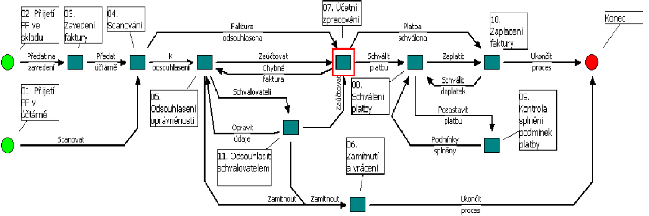
Workflow a jeho vzťah k procesom
- Definícia: Ide o procedurálnu automatizáciu business procesu, ktorá spravuje sekvenciu aktivít a vyvoláva príslušné zdroje.
- Rozdiel medzi business procesom a workflow:
- Business proces: Obecnejší pohľad z organizačnej perspektívy.
- Workflow: Konkrétny popis technickej realizácie a implementácie procesu.
Prechod od front k workflow
- Zotaviteľné fronty: Tvoria základ pre sekvenovanie; zaručujú len to, že po dokončení akcie A sa niekedy vykoná akcia B.
- Workflow pridáva navyše:
- Jazyk na popis procesov: Formálna definícia aktivít, podmienok a vetvenia.
- Roly a swimlanes: Priradenie aktivít konkrétnym účastníkom.
- Smerovanie: Využitie logických brán (XOR/AND/OR) namiesto ručne programovanej logiky.
- Monitoring a analýza: Sledovanie stavu inštancií a výkonnostných metrík.
Štandardizácia a WfMC
- WfMC (Workflow Management Coalition): Medzinárodná nezisková organizácia (založená v roku 1993), ktorá vznikla kvôli potrebe integrácie veľkého množstva softvérových nástrojov pre workflow.
- Oblasti štandardizácie:
- Jednotná terminológia a referenčný model.
- Spolupráca a prepojenie rôznych WF systémov.
- Formáty pre výmenu definícií procesov (od XPDL k súčasnému BPMN 2.0 XML).
Referenčný model WfMC
Model definuje centrálne rozhranie WES, na ktoré sa cez päť špecifických rozhraní pripájajú ostatné komponenty systému:
- Rozhranie 1: Nástroje pre definíciu procesov.
- Rozhranie 2: Klientske aplikácie workflow.
- Rozhranie 3: Vyvolané aplikácie.
- Rozhranie 4: Iné systémy WES.
- Rozhranie 5: Administratívne a monitorovacie nástroje.
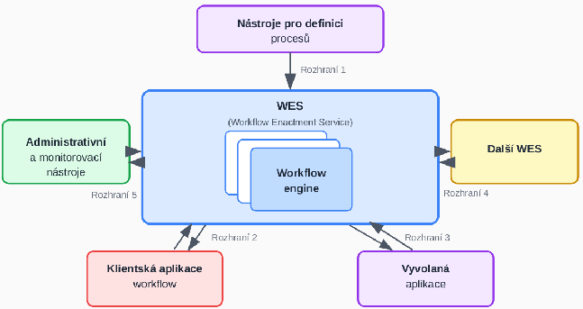
WES a Workflow Engine
- WES (Workflow Enactment Service): Služba, ktorá zabezpečuje vykonanie správnej činnosti pomocou správneho prostriedku v správny čas; skladá sa z jedného alebo viacerých workflow enginov.
- Workflow Engine: Jadro systému, ktoré:
- Interpretuje formálnu definíciu procesu.
- Vytvára inštancie procesov a riadi ich priebeh.
- Zabezpečuje prechody medzi aktivitami a vytvára pracovné položky (work items).
- Umožňuje administráciu a dohľad nad procesmi.
Hlavné prvky WF systému
- Klientske aplikácie: Rozhrania pre používateľov, ktorí cez ne vykonávajú jednotlivé úlohy.
- Vyvolané aplikácie: Softvérové nástroje spúšťané automaticky systémom pri začatí úlohy.
- Nástroje pre definíciu: Grafické editory (typicky BPMN) na modelovanie správ, udalostí a rozhodovacích pravidiel.
- Nástroje pre analýzu a verifikáciu:
- Simulácia: Overovanie modelu a predikcia správania („čo sa stane, keď…?“).
- Verifikácia: Matematické metódy (napr. Petriho siete) na overenie, či proces vždy dôjde do cieľa.
- Administrácia a monitorovanie: Sledovanie stavu inštancií v reálnom čase, kontrola lehôt (SLA) a meranie výkonnosti.
3D pohľad na workflow (dimenzie)
Model workflow možno vnímať cez tri základné osi, ktoré definujú jeho fungovanie:
- Case dimension (Prípad): Predstavuje konkrétny riešený problém (napr. konkrétna „žiadosť o pôžičku“), ktorý zvyčajne generuje externý zákazník. Spracúva sa vykonávaním úloh v určenom poradí.
- Process dimension (Proces): Definuje úlohu (task) ako krok vykonávania procesu, ktorý je charakterizovaný podmienkami pred (precondition) a po (postcondition) jeho vykonaní.
- Resource dimension (Zdroj): Zahŕňa zariadenia alebo osoby (zdroje), ktoré prácu vykonávajú.
- Pracovná položka (work item): Úloha pre konkrétny prípad.
- Činnosť (activity): Spojenie úlohy s konkrétnym zdrojom, ktoré vytvára front (worklist).
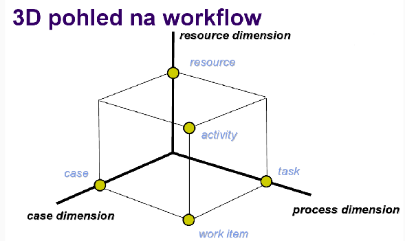
Role a dáta vo workflow
Prácu vo workflow nevykonávajú pracovníci náhodne, ale na základe priradených kompetencií a údajov:
- Role: Predstavujú triedu zdrojov podľa schopností (napr. „programátori“). Jedna osoba môže mať viacero rolí a mnoho osôb môže zdieľať rovnakú rolu. Role sú autorizované spracovávať požiadavky z front prislúchajúcich k činnostiam.
- Typy dát vo workflow:
- Riadiace dáta: Interné údaje workflow systému, ktoré sú navonok nedostupné.
- Vecné dáta: Slúžia na rozhodovanie v rámci procesu a sú prístupné aj aplikáciám.
- Aplikačné dáta: Dáta špecifické pre konkrétne aplikácie, ku ktorým workflow systém nemá prístup.
- Organizačný model: Definuje role a vzťahy medzi nadriadenými a podriadenými.
- Zoznam úloh (Worklist): Aktuálne úlohy pre používateľa, ktoré môžu byť pridelené postupne (skryté) alebo si ich používateľ volí sám.
Životný cyklus workflow
Životný cyklus workflow pozostáva z piatich nadväzujúcich fáz:
- Definícia procesu: Modelovanie procesu v grafickom editore (najčastejšie pomocou štandardu BPMN).
- Nasadenie (Deployment): Prenos hotovej definície procesu do workflow enginu.
- Spustenie inštancií: Vytváranie a riadenie konkrétnych bežiacich prípadov (instancií).
- Monitorovanie: Sledovanie stavu inštancií, dodržiavania lehôt (SLA) a využitia zdrojov.
- Analýza a optimalizácia: Identifikácia úzkych miest v procese a následná úprava modelu pre zvýšenie efektivity.
Ciele Business Process Managementu (BPM)
- Formálny popis: Snaha o presné zachytenie procesov prebiehajúcich v rámci organizácie.
- Riadenie: Využitie popísaných modelov na riadenie reálneho chodu pomocou WFM systémov.
- Zvyšovanie efektivity: Možnosť následnej analýzy a verifikácie procesov.
Štandardy pre modelovanie
- BPMN 2.0 (Business Process Model and Notation): Aktuálny primárny štandard, ktorý kombinuje grafickú notáciu s natívnou XML serializáciou (BPMN XML). Definície sú priamo spustiteľné v BPMN enginoch (napr. Camunda, Flowable).
- Historické formáty (legacy):
- XPDL: Pôvodný deskriptívny formát WfMC.
- BPEL (WS-BPEL): Procedurálny jazyk orientovaný na webové služby.
Základné elementy BPMN
BPMN využíva špecifické kategórie objektov na vizualizáciu toku procesu:
- 1. Události (Events): Ovplyvňujú tok procesu (začiatok, koniec, zmena stavu).
- Start (tenký okraj): None, časovač, správa, signál.
- Mezilehlá (dvojitý okraj): Časovač, správa, chyba, eskalácia.
- Konec (silný okraj): None, správa, chyba, ukončenie (terminate).
- Boundary (hraničné): Prichytené k aktivite; môžu byť prerušujúce (zastavia aktivitu) alebo neprerušujúce (spustia paralelný tok).
- 2. Aktivity (Activities): Práca, ktorá sa má vykonať; zahŕňa atomické úlohy (tasks), podprocesy alebo opakujúce sa úlohy.
- 3. Brány (Gateways): Riadia vetvenie a slučovanie toku.
- XOR (výlučné): Práve jedna vetva.
- AND (paralelné): Všetky vetvy súčasne.
- OR (inkluzívne): Jedna alebo viacero vetiev.
- 4. Spojovacie objekty:
- Sekvenčný tok (plná šipka): Určuje poradie aktivít.
- Tok správ (přerušovaná šipka): Komunikácia medzi rôznymi účastníkmi (poolmi).
- Asociácia: Prepojenie objektov s textovými poznámkami alebo artefaktmi.
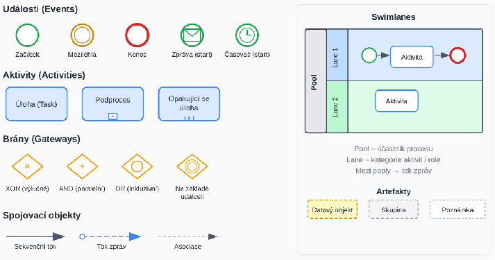
Plavecké dráhy (Swimlanes)
- Pool: Reprezentuje celého účastníka procesu (napr. organizáciu alebo systém).
- Lane: Rozdeľuje pool na kategórie, ktoré zvyčajne zodpovedajú konkrétnym rolám alebo oddeleniam.
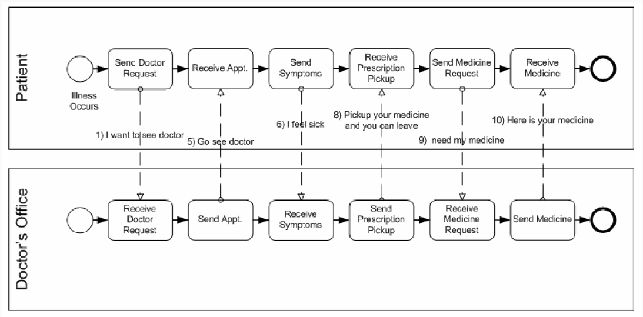
Kompenzácia v BPMN
- BPMN 2.0 obsahuje vstavanú podporu pre logické „vrátenie“ efektu dokončenej aktivity (napr. vrátenie platby, ak zlyhalo odoslanie tovaru).
- Využíva sa na to kompenzačná úloha spúšťaná špeciálnou kompenzačnou udalosťou.
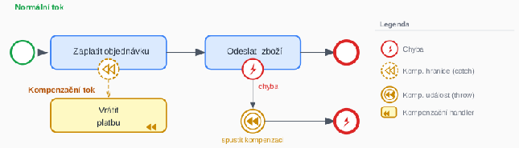
Vrstvy modelovania procesov
- Vrstva 1 – BPMN notácia: Grafické diagramy vytvorené v nástrojoch ako Camunda Modeler alebo draw.io.
- Vrstva 2 – BPMN 2.0 XML: Prenositeľná strojová reprezentácia procesu určená na nasadenie (deploy).
- Vrstva 3 – BPMN engine: Softvérové jadro, ktoré interpretuje XML a riadi bežiace inštancie (napr. Camunda, Kogito).
Workflow Patterns (Vzory riadenia toku)
Tieto vzory slúžia na definovanie logiky smerovania v procese bez nutnosti ručného programovania. Medzi základné patria:
- Sekvencia (Sequence): Najzákladnejší vzor; úloha sa spustí až po dokončení predchádzajúcej.
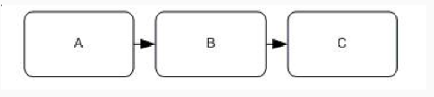
- Paralelné vetvenie a synchronizácia (AND):
- Parallel Split (AND-split): Rozdelí tok do viacerých paralelných vlákien spustených súčasne.
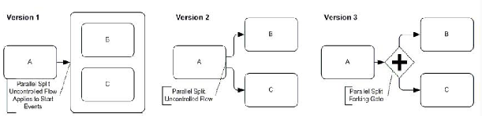
- Synchronizácia (AND-join): Čaká na dokončenie všetkých paralelných vlákien, kým povolí ďalší krok.
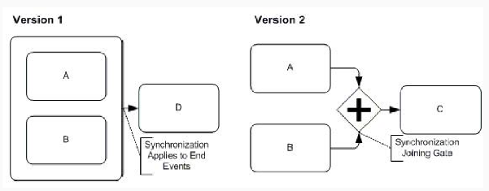
- Parallel Split (AND-split): Rozdelí tok do viacerých paralelných vlákien spustených súčasne.
- Výlučné rozhodnutie a jednoduché spojenie (XOR):
- Výlučné rozhodnutí (XOR-split): Na základe podmienky sa vyberie práve jedna vetva.
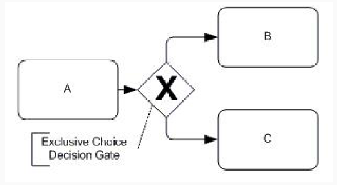
- Jednoduché spojení (XOR-merge): Spojí nezávislé vetvy; proces pokračuje okamžite, keď ľubovoľná vetva dosiahne bod spojenia (nečaká sa na ostatné).
- Výlučné rozhodnutí (XOR-split): Na základe podmienky sa vyberie práve jedna vetva.
- Vícenásobná volba a synchronizujúce zlúčenie (OR):
- Vícenásobná volba (OR-split): Aktivuje jednu alebo viacero vetiev podľa podmienok.
- Synchronizující sloučení (OR-join): Čaká len na tie vetvy, ktoré boli reálne spustené.
Flexibilita workflow
Flexibilita je nevyhnutná, pretože podmienky pre chod organizácie sa neustále menia (napr. zmena legislatívy či reštrukturalizácia). Zdroje rozlišujú dva prístupy k jej zabezpečeniu:
- Dopredná flexibilita: Snaha uvažovať o všetkých možných situáciách a variantoch už pri návrhu procesu.
- Zpětná flexibilita (Dynamická evolúcia): Schopnosť zmeniť definíciu workflow za behu, pričom na realizáciu týchto zmien sa využívajú tzv. evolution patterns.
Správa existujúcich inštancií pri zmene
Pri zmene schémy procesu (napr. prechod z verzie 1 na verziu 2) je kľúčové rozhodnúť, čo so starými, rozpracovanými prípadmi:
- Concurrent to completion: Najbezpečnejší prístup; staré inštancie dobehnú podľa pôvodného schématu, nové už podľa nového. Nevýhodou je, že v systéme existuje viacero verzií súčasne, čo komplikuje monitoring.
- Migrace na finální schéma: Existujúce inštancie sa okamžite prevedú na nové schéma. Podmienkou je, že inštancia musí byť v kompatibilnom stave (napr. nesmie byť v aktivite, ktorá v novej verzii neexistuje).
- Migrace na ad-hoc schéma: Najflexibilnejší, ale najzložitejší spôsob; vytvorí sa dočasné „mostové“ schéma, ktoré prevedie inštanciu zo starého stavu do bodu kompatibilného s novým procesom.
Moderné technológie a nástroje Workflow
Moderné BPMN 2.0 enginy
Enginy slúžia na interpretáciu a riadenie inštancií procesov definovaných v BPMN XML.
- Camunda 7: Najrozšírenejší open-source engine (Java); ponúka REST API, embedded aj standalone režim.
- Camunda 8 / Zeebe: Cloud-native distribuovaný engine; škálovateľný, poskytovaný ako SaaS alebo self-hosted.
- Flowable: Odvodený od Activiti; ľahší engine so silnou integráciou na Spring Boot.
- Activiti: Základ celého ekosystému, spravovaný spoločnosťou Alfresco.
- Kogito (Red Hat): Cloud-native nástupca jBPM určený pre Quarkus a Kubernetes; kombinuje BPMN a DMN.
- Bonitasoft: Low-code platforma s grafickým štúdiom pre tzv. citizen developerov.
Moderné prístupy: Orchestrácia vs. Choreografia
Dva odlišné spôsoby koordinácie služieb v rámci procesu:
- Orchestrácia (centrálna):
- Využíva centrálny BPMN engine, ktorý pozná celý stav procesu.
- Výhody: Centrálnu viditeľnosť, jednoduchšie ladenie a monitoring.
- Nevýhody: Engine je „single point of failure“ a možný úzke miesto (bottleneck) pri škálovaní.
- Choreografia (decentralizovaná):
- Event-driven prístup bez centrálneho koordinátora; služby komunikujú cez Message brokera (napr. Kafka).
- Výhody: Prirodzená škálovateľnosť, voľné väzby medzi službami.
- Nevýhody: Stav je distribuovaný (ťažšie sledovanie), zložitejšie ladenie a testovanie.
Moderné distribuované workflow
- Temporal (temporal.io): Prístup „workflow ako kód“ (Java, Python, Go, TypeScript); ponúka automatický retry, timeouty a zotavenie bez straty stavu.
- Cloudové managed služby:
- AWS Step Functions: Vizuálny stavový stroj (serverless).
- Azure Logic Apps: Low-code riešenie s rozsiahlym ekosystémom konektorov.
- Google Cloud Workflows: Definícia cez YAML/JSON pre integráciu GCP služieb.
- Spoločný znak: Serverless model s platbou za prechody; nevýhodou je vendor lock-in.
Process Mining
Automatické objavovanie procesov z event logov (záznamy v tvare [caseID, aktivita, čas]).
- Kľúčové úlohy:
- Discovery: Rekonštrukcia modelu procesu priamo z logov.
- Conformance checking: Porovnanie skutočného priebehu v systéme s navrhnutým BPMN modelom.
- Enhancement: Doplnenie modelu o reálne výkonnostné metriky.
- Nástroje:
- ProM: Akademická platforma (TU/e).
- Celonis: Popredné komerčné riešenie.
- Disco / Bupar (Python): Ľahšie nástroje na analýzu.
P8 Business intelligence a OLAP
Dátový sklad (Data Warehouse – DWH)
Dátový sklad je podnikovo štruktúrovaný depozitár dát určený na podporu rozhodovania, ktorý obsahuje operačné aj agregované dáta.
- Vlastnosti dátového skladu:
- Orientácia podľa subjektu: Fakty sú organizované podľa priesečníkov n-dimenzií.
- Integrácia: Dáta z rôznych zdrojov sú ukladané jednotne (jednotná terminológia, merné jednotky) po predchádzajúcom vyčistení.
- Časová premenlivosť: Každý kľúč obsahuje časový údaj; historický horizont je typicky 5–10 rokov (na rozdiel od aktuálnych dát v OLTP).
- Nemennosť: Dáta sa v sklade neprepisujú, vykonávajú sa len operácie vkladania a čítania. Nepotrebuje transakčné spracovanie ani zložité mechanizmy súbežného prístupu.
- Architektúra dátového skladu (3 časti):
- Získanie dát: Zahŕňa zdrojové dáta a miesto prípravy (proces ETL – Extraction, Transformation, Loading).
- Uloženie dát: Samotný dátový sklad, menšie celky (dátové trhy) a úložisko metadát. Sklad je navrhnutý ako read-only pre potreby analýzy.
- Odovzdávanie výsledkov: Výstupné rozhrania ako OLAP, dotazovacie nástroje, generátory správ a nástroje pre data mining.
- Zhrnutie požiadaviek na dátový sklad:
- Schopnosť vykonávať agregácie (súčty, priemery a pod.).
- Databázový model navrhnutý pre analytické dotazy.
- Možnosť integrovať dáta z viacerých heterogénnych aplikácií.
- Prevaha operácie čítania nad zápisom.
- Pravidelné, periodické dopĺňanie nových dát.
- Súčasné využitie aktuálnych aj historických údajov.
1. Multidimenzionálny model (Dimenzie a Fakty)
Základom modelu je multidimenzionálna kocka, ktorá je matematicky definovaná ako funkcia: gm:(A1×A2×A3×⋯×Am)→F
- Dimenzie (Ai): Usporiadané množiny hodnôt (napr. Čas, Produkt, Miesto), ktoré definujú súradnice v kocke.
- Fakty (F): Agregovateľné číselné hodnoty (množina faktov) nachádzajúce sa na priesečníkoch dimenzií (napr. objem predaja, tržba).
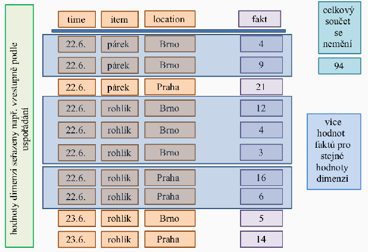
2. Agregácie a prvý krok výpočtu
V reálnom systéme existujú detailné hodnoty (napr. jednotlivé transakcie), ktorých môže byť pre rovnaké súradnice dimenzií viacero.
- Prvý krok agregácie: Prevedie tieto detaily na tzv. základný kuboid (n-rozmerná kostka so všetkými dimenziami), kde je pre každú kombináciu súradníc už len jeden agregovaný fakt.
- Matematicky (pre súčet): soucˇetn(d1,…,dn)=∑detail(d1,d2,…,dn)
3. Podkocky (Kuboidy) a ich hierarchia
Z pôvodnej n-rozmernej kostky možno odvodzovať podkocky (kuboidy) s menším počtom dimenzií pomocou operácie roll-up.
- Množina podkociek tvorí čiastočne uspořádanú množinu – zväz kuboidov (lattice).
- Základný kuboid (n-D): Obsahuje fakty pre všetky aktívne dimenzie.
- Vrcholový kuboid (0-D): Predstavuje jediný agregovaný fakt cez úplne všetky dimenzie (celkový súčet za všetko).
Príklad: Predaj pečiva
Predstavme si kocku s 3 dimenziami: Čas (d1), Produkt (d2) a Miesto (d3).
- Detailné hodnoty (transakcie):
- 22.6., rohlík, Brno → 12 ks
- 22.6., rohlík, Brno → 4 ks
- Prvý krok (Základný 3D kuboid): Sčítame detaily pre rovnaké súradnice: soucˇet3(22.6.,rohlıˊk,Brno)=12+4=16.
- Podkocka (2D kuboid bez dimenzie Miesto): Agregujeme (sčítame) hodnoty cez všetky mestá pre daný čas a produkt: soucˇet2(22.6.,rohlıˊk)=miesto∈{Brno,Praha}∑soucˇet3(22.6.,rohlıˊk,miesto) Ak sa v Prahe predalo 22 ks a v Brne 19 ks, výsledok v 2D podkocke bude 41.
- Vrcholový kuboid (0D): Agregujeme úplne všetko. Ak celkový súčet všetkých predajov (všetky dni, produkty aj mestá) vyjde napr. 94, vrcholový kuboid obsahuje len túto jednu hodnotu.
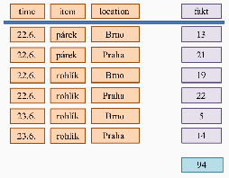
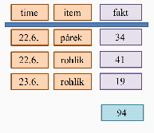
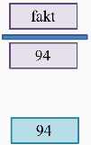
Architektúry OLAP serverov
Existujú tri základné prístupy k ukladaniu a spracovaniu analytických dát:
- MOLAP (Multidimensional OLAP):
- Využíva vlastné multidimenzionálne dátové štruktúry (polia, riedke matice).
- Dáta sú predzpracované a agregované, čo zabezpečuje maximálny výkon pri indexovaní.
- Nevýhody: Vysoká redundancia a veľké nároky na úložný priestor.
- Príklady: Oracle Essbase, Jedox.
- ROLAP (Relational OLAP):
- Dáta ostávajú v relačných tabuľkách, ale navonok sú prezentované ako multidimenzionálny pohľad.
- Výhody: Žiadna redundancia a výborná možnosť škálovania.
- Príklady: ClickHouse, Apache Kylin, cloudové riešenia ako Google BigQuery alebo Amazon Redshift.
- HOLAP (Hybrid OLAP):
- Kombinuje oba prístupy: detailné dáta sú v relačných tabuľkách (ROLAP) a predagregáty v multidimenzionálnych štruktúrach (MOLAP).
- Príklady: Microsoft SSAS, SAP BW.
Konceptuálne modelovanie (Schémy)
Pri návrhu štruktúry dátového skladu sa využívajú tri základné typy schém:
- Schéma hviezdy (Star schema):
- Pozostáva z jednej centrálnej tabuľky faktov, ku ktorej sú pripojené tabuľky dimenzií.
- Relácie dimenzií nie sú normalizované, čo model zjednodušuje, ale môže spomaliť spracovanie.
- Neposkytuje priamu podporu pre hierarchie (rieši sa organizačne).
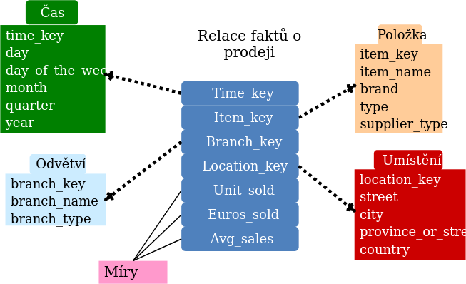
- Schéma snehovej vločky (Snowflake schema):
- Ide o zjemnenie hviezdy, kde je hierarchia dimenzií normalizovaná do viacerých naviazaných tabuliek.
- Výhody: Lepšia konzistencia dát a jednoduchšia údržba dimenzií.
- Nevýhody: Zložitejšie analytické dotazy.
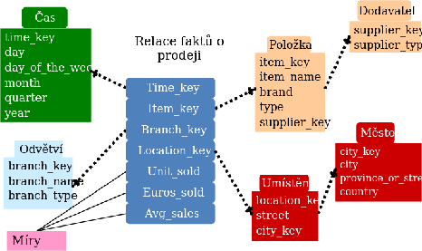
- Konstelácia faktov (Fact constellation / Galaxy schema):
- Obsahuje viacero tabuliek faktov, ktoré navzájom zdieľajú spoločné tabuľky dimenzií.
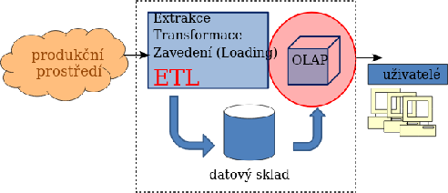
- Obsahuje viacero tabuliek faktov, ktoré navzájom zdieľajú spoločné tabuľky dimenzií.
Charakteristika tabuliek
- Tabuľka faktov: Zvyčajne najväčšia a často jediná tabuľka v databáze. Obsahuje numerické miery (napr. tržba, cena, počet) a cudzie kľúče do tabuliek dimenzií.
- Tabuľky dimenzií (číselníky): Obsahujú popisné údaje usporiadané logicky alebo hierarchicky. Sú menšie, menia sa menej často a najčastejšie reprezentujú čas, geografiu alebo produkty.
OLAP operácie nad kockou
Umožňujú používateľom interaktívne skúmať a analyzovať multidimenzionálne dáta uložené v dátovom sklade. Medzi základné operácie nad dátovou kockou patria:
- Roll-up (Vyrolovanie): Predstavuje posun o úroveň vyššie v hierarchii kuboidov, čím dochádza k zvýšeniu úrovne agregácie. V praxi to znamená napríklad prechod od zobrazenia dát po mesiacoch k zobrazeniu po kvartáloch alebo rokoch.
- Drill-down (Zavŕtanie): Je opačnou operáciou k roll-up. Znamená posun o úroveň nižšie, čo vedie k zvýšeniu detailu pridaním ďalšej dimenzie. Príkladom je rozpad ročných predajov na jednotlivé mesiace.
- Pivoting (Pretočenie): Táto operácia mení usporiadanie (poradie) dimenzií v rámci aktuálneho pohľadu bez toho, aby sa menila ich množina. Ide v podstate o otočenie niektorej zo stien kocky smerom k používateľovi (napr. zmena z
čas × produktnaprodukt × čas). - Slicing (Seříznutí / Rez): Výber konkrétnej projekcie zafixovaním hodnoty v jednej dimenzii pomocou filtra. Príkladom je obmedzenie zobrazenia dát len na konkrétny región (napr.
región = Praha). - Dicing (Kockovanie): Ide o zložitejšiu formu filtrovania, kde sa nastavujú obmedzujúce podmienky (predikáty) cez viacero dimenzií súčasne. Príkladom môže byť výber dát pre kombináciu:
Praha + Q1 2024 + kategória elektro.
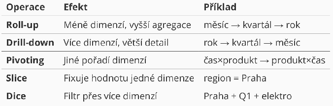
P9 Vizualizácia dát
Webová vizualizácia dát
Canvas
Canvas (v preklade „plátno“) je element HTML5, ktorý umožňuje dynamické vykresľovanie rastrovej grafiky pomocou skriptovacieho jazyka, zvyčajne JavaScriptu.
- Charakteristika:
- Ide o rastrový prístup, kde sa grafika vykresľuje pixel po pixeli.
- Grafické prvky (napr. nakreslený obdĺžnik) nie sú reprezentované v DOM (Document Object Model), čo znamená, že prehliadač o nich po vykreslení „nevie“ ako o samostatných objektoch.
- Obsah sa definuje cez Canvas API získaním kontextu, najčastejšie 2D (
getContext("2d")) pre bežnú grafiku alebo WebGL pre pokročilú 3D grafiku a hry.
- Silné stránky:
- Vysoký výkon pri spracovaní veľkého množstva grafických prvkov.
- Ideálny na tvorbu hier a komplexných animácií.
- Slabé stránky:
- Sťažený prístup a manipulácia s jednotlivými prvkami po ich vykreslení.
- Horšie prepojenie s používateľskými udalosťami (napr. kliknutie na konkrétny stĺpec v grafe).
SVG (Scalable Vector Graphics)
SVG je značkovací jazyk z rodiny XML určený na popis vektorovej grafiky, ktorý je štandardom W3C.
- Charakteristika:
- Ide o vektorový prístup, čo znamená, že grafika zostáva ostrá aj pri priblížení.
- Všetky grafické prvky (ako
<circle>,<rect>alebo<path>) sú súčasťou DOM, takže sa s nimi dá pracovať podobne ako s bežnými HTML elementmi. - Podporuje štýlovanie pomocou CSS a priraďovanie handlerov pre udalosti (napr.
onclick,onmouseover) priamo k jednotlivým tvarom.
- Silné stránky:
- Jednoduchý prístup a manipulácia s prvkami pomocou JavaScriptu alebo knižníc ako D3.js.
- Vstavaná podpora pre animácie a interaktivitu.
- Najvhodnejšia voľba pre tvorbu vizualizačných nástrojov a diagramov.
- Slabé stránky:
- Pri extrémne vysokom počte objektov (tisíce prvkov v DOM) klesá výkon vykresľovania.
D3.js (Data-Driven Documents)
D3.js je JavaScriptová knižnica určená na manipuláciu s dokumentmi na základe dát. Funguje na princípe transformácie vstupných dát (napr. CSV, JSON) na vizuálne elementy DOM.
- Základné funkcie a manipulácia s DOM:
- Selekcia: Pomocou funkcií
d3.select()(prvý výskyt) ad3.selectAll()(všetky výskyty) možno vyberať elementy pomocou CSS selektorov a následne meniť ich text, atribúty alebo štýly. - Práca s dátami: Funkcia
data()prepojí dáta s vybranými elementmi. Kľúčové sú funkcie enter() (vytvorenie uzlov pre nové dáta) a exit() (odstránenie prebytočných uzlov). - Dynamické vlastnosti: Atribúty elementov (napr. farbu alebo výšku) možno nastavovať dynamicky pomocou anonymných funkcií, ktoré pracujú s hodnotou dát (
d) a ich indexom (i). - Animácie a udalosti: Podporuje plynulé prechody cez
transition(), nastavenie trvania (duration) a odozvu na udalosti akoonclickaleboonmouseover.
- Selekcia: Pomocou funkcií
- Štruktúra projektov: D3 sa skladá z viacerých modulov, napríklad d3-shape (tvary), d3-scale (projekcia dát), d3-transition (animácie) alebo d3-geo pre mapy.
Geovizualizácia
Cieľom geovizualizácie je zobraziť dáta priradené ku konkrétnym geografickým súradniciam (zemepisná šírka a dĺžka) priamo na mape.
- Spôsoby reprezentácie mapy:
- Rastrová: Mapa sa skladá z obrázkových dlaždíc (tiles), ktoré zodpovedajú aktuálnej pozícii a priblíženiu (napr. OpenStreetMaps).
- Vektorová: Mapa je definovaná pomocou geometrických tvarov – polygóny (štáty), čiary (rieky) alebo body (mesta).
- Kombinovaná: Využíva rastrový podklad, nad ktorým sú vykreslené vektorové vrstvy (tzv. overlays).
- Dátový formát GeoJSON:
- Ide o štandardizovaný formát (RFC 7946) na kódovanie geografických dát v štruktúre JSON.
- Popisuje objekty ako
Point(bod),LineString(čiara) aPolygon. - Súradnice v GeoJSONe reprezentujú reálne miesta na Zemi.
- Nástroje pre geovizualizáciu:
- d3-geo: Modul pre D3.js, ktorý poskytuje funkcie pre rôzne mapové projekcie (napr. azimutálna, kužeľová, cylindrická) a spracovanie GeoJSON súborov na tvorbu kartogramov.
- Leaflet: Responzívna open-source knižnica na tvorbu komplexných máp. Umožňuje skladať mapy z dlaždíc (tiles), pridávať značky (markers) a vyskakovacie okná (popups).
- Google Maps Platform: Robustné riešenie vyžadujúce API kľúč, ktoré takisto umožňuje prácu s vrstvami a značkami na mapách Google.